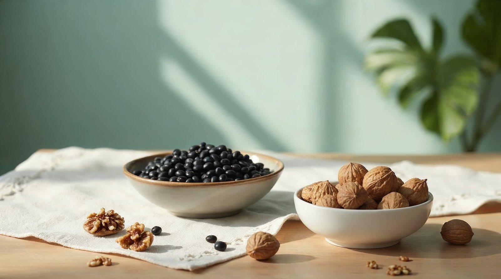
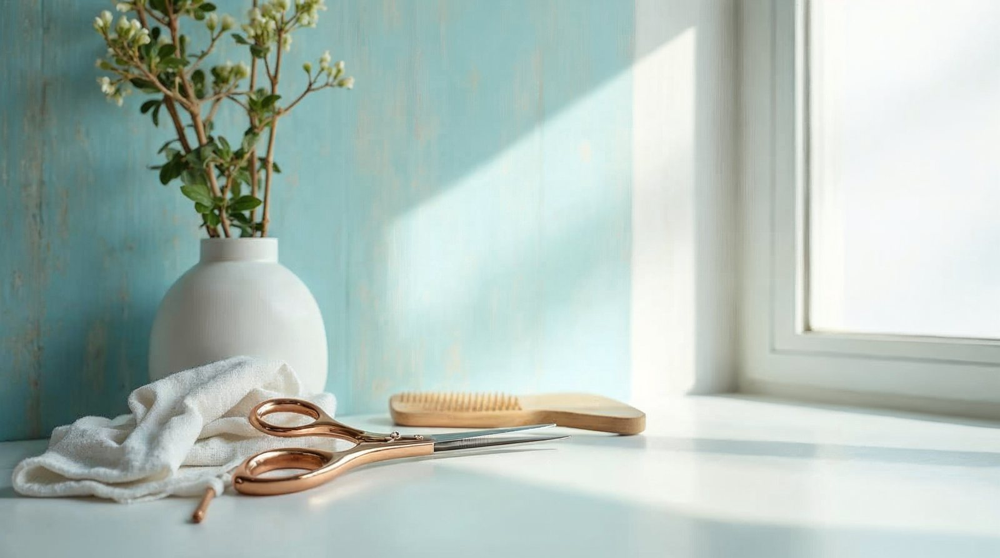
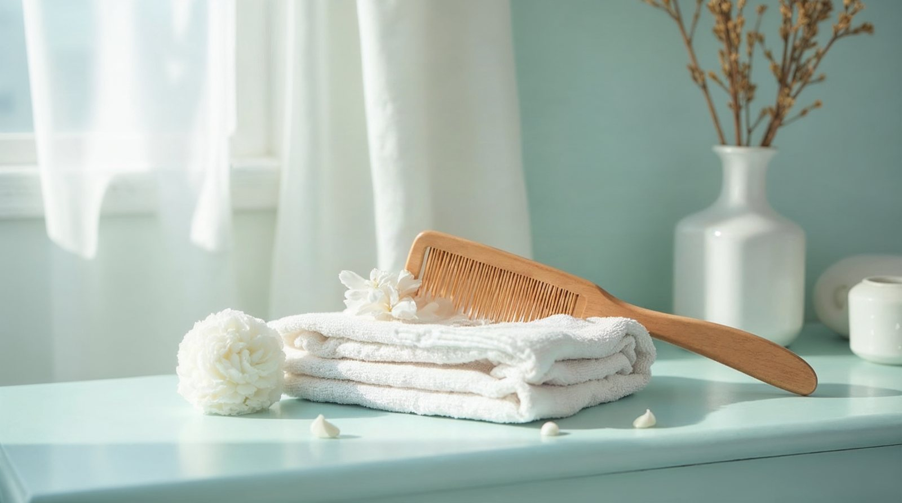
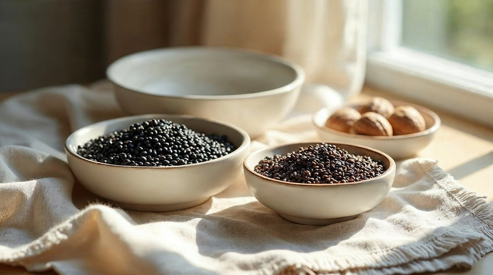
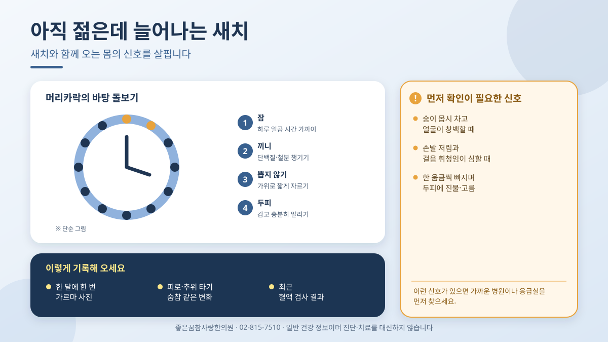

이종호 한의사 감수좋은꿈참사랑한의원 대표원장 (한의사 면허번호 19769)발행 2026-11-26 · 수정 2026-11-26
이 글의 차례
출근 준비를 하다가 욕실 거울 앞에서 가르마를 손가락으로 넘겨 봅니다. 정수리 근처에서 반짝이는 흰 머리카락 몇 가닥이 눈에 들어옵니다. 지난달에 뽑았던 자리 근처인데 또 생겼습니다. 친구들은 아직 까만 머리인데 나만 이런 것 같아 괜히 마음이 쓰입니다.
새치로 오시는 분들은 대부분 조심스럽게 말씀을 꺼내십니다. 병이라고 하기엔 애매하고, 그냥 두기엔 자꾸 신경이 쓰인다고요. 염색을 시작하자니 이른 것 같고, 뽑자니 더 많아진다는 말이 마음에 걸린다고 하십니다. 그리고 꼭 덧붙이십니다. "제가 요즘 너무 무리해서 그런 걸까요?"
흰머리는 누구에게나 언젠가 찾아오는 변화입니다. 다만 그 시기가 또래보다 이르게 오는 분들이 있고, 그 가운데에는 집안 내력인 경우도, 몸이 보내는 다른 신호와 함께 오는 경우도 있습니다. 새치 자체보다 새치와 함께 오는 몸의 변화를 살피는 것이 중요한 이유입니다. 그래서 진료실에서는 머리카락만이 아니라 요즘의 잠과 식사, 피로를 함께 여쭙니다.
이 글에서는 이른 새치가 왜 생기는지, 함께 확인해 볼 것은 무엇인지, 생활과 두피 관리에서 무엇을 챙기면 좋은지, 진료실에서는 무엇을 여쭙는지를 차근차근 정리해 보겠습니다.

흰머리는 어떻게 생기나요
머리카락의 색은 모낭 속에 있는 색소 세포가 만듭니다. 머리카락이 자라는 동안 이 세포가 멜라닌이라는 색소를 만들어 머리카락 속에 넣어 줍니다. 그런데 이 색소 세포가 지치거나 줄어들면 색이 없는 머리카락, 곧 흰머리가 자라 나옵니다.
흰머리는 처음부터 하얗게 자라 나오는 것이지, 까맣던 머리카락이 하루아침에 하얗게 변하는 것은 아닙니다. 그래서 오늘 갑자기 흰머리가 늘었다고 느끼셨다면, 실제로는 몇 주 전부터 조금씩 자라 나오던 것이 눈에 띄는 길이가 된 경우가 많습니다. 너무 놀라지 않으셔도 됩니다.
흰머리가 처음 생기는 시기는 사람마다 꽤 다릅니다. 보통 나이가 들면서 옆머리와 관자놀이 쪽부터 시작하는 경우가 많고, 정수리와 뒷머리는 조금 늦게 바래는 편입니다. 그리고 또래보다 눈에 띄게 일찍 시작하면 흔히 새치라고 부릅니다.
왜 젊은 나이에 새치가 생길까요
이른 새치의 가장 흔한 이유는 집안 내력입니다. 부모님이나 형제 가운데 일찍 흰머리가 난 분이 있다면 나도 비슷한 시기에 시작될 가능성이 큽니다. 이 경우는 몸에 다른 문제가 있다기보다 타고난 머리카락의 성향에 가깝습니다.
집안 내력 말고도 새치와 함께 살펴볼 만한 몸의 상태들이 있습니다. 진료실에서 이야기를 나눠 보면 아래와 같은 경우가 자주 겹칩니다.
- 갑상선 기능이 너무 높거나 낮은 경우
- 철분이나 비타민 B12가 부족해 빈혈 기운이 있는 경우
- 식사를 자주 거르거나 무리한 다이어트를 이어 온 경우
- 담배를 오래 피워 온 경우
- 잠이 부족하고 큰 스트레스가 몇 달씩 이어진 경우
이 가운데 갑상선과 빈혈은 피로, 추위를 잘 타는 것, 숨참, 손발 저림처럼 다른 신호와 함께 오는 경우가 많습니다. 새치와 함께 이런 변화가 느껴진다면 내과에서 혈액 검사를 한 번 받아 보시길 권합니다.
스트레스와 흰머리의 관계는 오래전부터 이야기되어 왔고, 최근 연구에서도 큰 스트레스가 색소 세포를 지치게 할 수 있다는 설명이 나오고 있습니다. 다만 스트레스 하나만으로 모든 새치가 설명되지는 않으니, 집안 내력과 몸의 상태를 함께 보는 것이 좋습니다.
한의학에서는 머리카락을 어떻게 보나요?
한의학에서는 예로부터 머리카락을 혈의 여유가 드러나는 자리로 보았습니다. 몸의 기운과 혈이 넉넉하면 머리카락에 윤기가 돌고, 오랜 과로나 잠 부족, 부족한 식사로 혈이 모자라면 머리카락이 가늘고 푸석해지며 색이 일찍 바랠 수 있다고 보았습니다.
그래서 진료실에서는 새치 그 자체보다 몸 전체의 여유를 함께 살펴봅니다. 잠은 충분한지, 식사는 고른지, 월경량이 많아 혈이 빠져나가지 않는지, 손발이 차고 쉽게 지치지 않는지를 여쭙니다. 이런 질문들이 새치와 함께 오는 몸의 피로를 찾는 실마리가 됩니다.
다만 한의학의 이런 관점이 이미 하얗게 자란 머리카락을 다시 까맣게 만든다는 뜻은 아닙니다. 지친 몸을 살피고 생활을 바로잡는 쪽에 초점을 두고 말씀드립니다.
같은 새치라도 어떤 분은 늘 피곤하고 손발이 차며, 어떤 분은 얼굴로 열이 오르고 잠이 얕습니다. 이렇게 몸이 지친 모양이 다르면 생활에서 먼저 챙길 것도 달라집니다. 진맥과 문진은 그 모양을 찾기 위한 과정입니다.
새치를 뽑으면 더 많아질까요?
새치를 하나 뽑으면 그 자리에 두세 개가 난다는 말을 자주 들으셨을 겁니다. 실제로는 한 모낭에서 한 가닥이 자라기 때문에 뽑는다고 수가 늘어나지는 않습니다. 다만 다른 자리의 새치가 원래 자라 나오는 시기와 겹치면서 늘어난 것처럼 느껴질 수 있습니다.
그렇다고 뽑는 것을 권하지는 않습니다. 같은 자리를 자꾸 뽑으면 모낭이 상처를 입어 그 자리에서 머리카락이 아예 자라지 않거나 가늘어질 수 있습니다. 눈에 띄는 새치가 신경 쓰인다면 뽑기보다 두피 가까이에서 가위로 잘라 주시는 쪽을 권합니다.

염색은 어떻게 하면 좋을까요
새치가 늘어 염색을 시작하는 분이 많습니다. 염색약에 들어 있는 성분 가운데 일부는 두피를 자극하거나 피부 반응을 일으킬 수 있어서, 처음 쓰는 염색약은 팔 안쪽에 조금 발라 이틀 정도 지켜본 뒤 쓰시는 것이 좋습니다.
염색 뒤 두피가 가렵거나 붉어지고 얼굴과 목까지 붓는다면 염색약에 피부가 반응한 것일 수 있습니다. 그런 경험이 있으셨다면 같은 계열의 염색약은 피하시고, 피부과에서 어떤 성분에 반응하는지 확인해 보시길 권합니다.
염색 간격을 너무 짧게 잡으면 두피와 머리카락이 쉬지 못합니다. 새치가 주로 앞쪽과 가르마에 몰려 있다면 그 부분만 부분 염색을 하는 것도 두피 부담을 줄이는 방법입니다. 염색한 날은 두피가 예민하니 뜨거운 바람과 손톱 긁기를 피해 주세요.
새치와 탈모가 함께 올 때
새치가 늘면서 머리카락이 가늘어지고 빠지는 양도 늘었다고 하시는 분이 있습니다. 둘은 서로 다른 일이지만, 몸이 지친 시기에 함께 찾아오는 경우가 적지 않습니다. 잠이 부족하고 끼니가 불규칙하며 스트레스가 큰 시기라면 머리카락 전체가 힘을 잃기 쉽습니다.
큰 몸살이나 수술, 출산, 급격한 체중 감소 뒤 몇 달이 지나 머리카락이 한꺼번에 빠지는 일도 있습니다. 이런 탈모는 시간이 지나며 다시 자라는 경우가 많지만, 그동안 몸을 회복시키는 것이 중요합니다. 빠지는 양과 시기를 함께 적어 오시면 어떤 흐름인지 가늠하는 데 도움이 됩니다.

두피 환경도 함께 살펴봅니다
두피가 늘 기름지고 가렵거나, 반대로 건조해서 하얀 각질이 떨어진다면 두피 환경이 머리카락에 좋은 상태는 아닙니다. 새치 자체와 직접 연결되지는 않더라도, 건강한 머리카락이 자라는 바탕을 돌본다는 뜻에서 함께 살펴봅니다.
머리는 저녁에 감아 하루 동안 쌓인 땀과 먼지를 씻어 내고, 두피까지 충분히 말린 뒤 주무시는 것이 좋습니다. 손톱으로 두피를 세게 긁기보다 손가락 끝으로 부드럽게 문지르며 감아 주세요. 모자를 오래 쓰는 분은 가끔 벗어 두피에 바람이 통하게 해 주시면 좋습니다.
먼저 이렇게 여쭙니다
처음 오시면 저는 대략 이런 순서로 여쭙니다. 미리 생각해 오시면 이야기가 훨씬 수월해집니다.
- 흰머리는 언제부터 눈에 띄었나요? 최근 몇 달 사이 부쩍 늘었나요?
- 부모님이나 형제 가운데 일찍 흰머리가 난 분이 계신가요?
- 요즘 피로, 추위 타기, 숨참, 손발 저림 같은 변화가 있나요?
- 잠드는 시각과 깨는 시각, 잠의 깊이는 어떠신가요?
- 식사는 하루 몇 끼, 어떤 식으로 드시나요? 다이어트를 하신 적이 있나요?
- 월경이 있는 분은 주기와 양이 어떠신가요?
모든 질문에 정확히 답하지 못하셔도 괜찮습니다. 가족 가운데 새치가 있는 분이 있는지만 알아도 이야기의 방향이 많이 달라집니다. 담배를 피우시는지, 하루 커피는 몇 잔인지, 술자리는 얼마나 잦은지도 함께 여쭙습니다.
일상에서 먼저 해 볼 수 있는 것
새치를 다시 까맣게 되돌리는 생활 비법은 없습니다. 다만 몸과 두피가 지치지 않게 돌보는 것은 새 머리카락이 건강하게 자라는 바탕이 됩니다. 아래 가운데 하나부터 시작해 보세요.
- 잠드는 시각을 일정하게 맞추고 하루 일곱 시간 가까이 자 보기
- 끼니를 거르지 않고 단백질 반찬과 푸른 채소를 곁들이기
- 철분이 많은 살코기, 생선, 콩, 짙은 채소를 일주일에 여러 번 챙기기
- 담배를 피우신다면 줄이는 방법을 함께 찾아보기
- 머리를 감은 뒤 두피까지 충분히 말리기
- 뜨거운 드라이어 바람을 두피에 오래 대지 않기
무리한 다이어트로 식사를 크게 줄이면 머리카락이 가늘어지고 윤기가 떨어지는 경우가 많습니다. 체중 관리를 하시는 중이라면 굶기보다 끼니의 구성을 바꾸는 쪽을 권합니다.
스트레스가 많은 시기라면 하루 중 짧게라도 몸을 쉬게 하는 시간을 정해 두세요. 저녁에 15분 걷기, 잠들기 전 휴대폰 내려놓기처럼 작은 것이라도 매일 이어 가는 것이 중요합니다. 몸이 쉴 틈을 얻으면 잠과 소화가 먼저 편해지는 경우가 많습니다.
한의원에서 함께 살필 수 있는 경우
- 새치와 함께 쉽게 지치고 몸이 늘 무거운 경우
- 잠이 얕고 자주 깨며 아침이 개운하지 않은 경우
- 손발이 차고 어지럼이나 눈의 피로가 잦은 경우
- 월경량이 많거나 주기가 흔들리면서 기운이 떨어진 경우
- 머리카락이 가늘어지고 빠지는 양도 함께 늘어난 경우
좋은꿈참사랑한의원에 오시면 모든 분의 맥을 먼저 짚고, 잠과 소화, 대소변, 손발 온도를 여쭈며, 두피와 머리카락 상태를 직접 확인합니다.
진찰한 내용을 바탕으로 생활에서 바꿔 볼 것 하나와 함께 침, 한약 상담 가운데 지금 상태에 맞는 것을 정합니다. 한약을 상의할 때는 드시는 약을 모두 확인하고 신중하게 정합니다. 갑상선이나 빈혈로 드시는 약이 있다면 처방한 선생님과 상의 없이 멈추지 않습니다.
임신 중이시거나 임신을 계획하고 계시다면 진료 전에 먼저 알려 주세요. 그에 맞춰 조심스럽게 정하고, 필요하면 산부인과와 상의하시도록 안내합니다.
이렇게 기록해 오시면 상담이 쉬워집니다
새치는 변화가 느려서 기록이 큰 도움이 됩니다. 한두 달 정도 간단히 적어 보세요.
- 같은 조명에서 찍은 가르마와 옆머리 사진(한 달에 한 번)
- 잠든 시각과 깬 시각, 아침의 개운함
- 끼니를 거른 날과 다이어트 여부
- 스트레스가 컸던 주 표시
- 피로, 추위 타기, 숨참 같은 몸의 변화
- 최근 혈액 검사 결과(있다면)
사진은 같은 자리, 같은 각도, 같은 조명에서 찍어야 비교가 됩니다. 머리를 감고 말린 뒤 찍으면 가장 고르게 보입니다. 빠진 달이 있어도 괜찮으니 편한 방법으로 이어 가 보세요. 기록을 나란히 놓으면 지친 시기와 머리카락 변화가 겹치는지가 보이기 시작합니다.

새치를 바라보는 마음
새치는 나이보다 먼저 찾아온 손님 같아서 반갑지 않은 것이 당연합니다. 하지만 새치가 있다고 몸이 늙었다거나 건강이 나쁘다는 뜻은 아닙니다. 집안 내력으로 일찍 시작된 새치라면 그저 나의 머리카락이 가진 개성일 수도 있습니다. 염색을 하든 그대로 두든, 그것은 마음이 편한 쪽으로 고르시면 됩니다.
중요한 것은 새치와 함께 오는 몸의 신호를 놓치지 않는 것입니다. 이번 주에는 잠드는 시각 하나만 정해서 지켜 보세요. 다음에 오시면 사진과 생활 기록을 함께 펼쳐 보며 몸의 여유를 어떻게 되찾을지 이야기 나누겠습니다.
이런 증상은 먼저 확인이 필요합니다
- 흰머리와 함께 숨이 몹시 차고 얼굴이 창백하며 손발 저림과 걸음 휘청임이 심해지는 경우
- 머리카락이 갑자기 한 움큼씩 빠지면서 두피가 붉게 붓고 진물이나 고름이 나는 경우
이런 신호가 있으면 한의원보다 가까운 병원이나 응급실을 먼저 찾으세요.
함께 읽으면 좋은 글
- 정수리와 이마 선이 점점 비어 보이는 남성형·여성형 탈모는 어떻게 살피나요?
- 큰 스트레스나 몸살 뒤 몇 달 지나 머리카락이 한 움큼씩 빠질 때는 어떻게 살피나요?
- 동전 모양으로 머리카락이 빠지는 원형 탈모는 어떻게 살피나요?
- 충분히 쉬어도 몸이 늘 피곤한 만성피로는 어떤 점을 살펴보나요?
- 피곤함이 오래가면 혈액검사가 필요한가요?

여쭙는 것
- 흰머리는 언제부터 눈에 띄었나요? 최근 몇 달 사이 부쩍 늘었나요?
- 부모님이나 형제 가운데 일찍 흰머리가 난 분이 계신가요?
- 요즘 피로, 추위 타기, 숨참, 손발 저림 같은 변화가 있나요?
생활에서 해 볼 것
- 잠드는 시각을 일정하게 맞추고 하루 일곱 시간 가까이 자 보기
- 끼니를 거르지 않고 단백질 반찬과 푸른 채소를 곁들이기
- 철분이 많은 살코기, 생선, 콩, 짙은 채소를 일주일에 여러 번 챙기기
한의원에서 함께 살필 것
- 새치와 함께 쉽게 지치고 몸이 늘 무거운 경우
- 잠이 얕고 자주 깨며 아침이 개운하지 않은 경우
- 손발이 차고 어지럼이나 눈의 피로가 잦은 경우
먼저 확인이 필요한 신호
- 흰머리와 함께 숨이 몹시 차고 얼굴이 창백하며 손발 저림과 걸음 휘청임이 심해지는 경우
- 머리카락이 갑자기 한 움큼씩 빠지면서 두피가 붉게 붓고 진물이나 고름이 나는 경우
한눈에 보는 표
| 구분 | 핵심 |
|---|---|
| 여쭙는 것 | 흰머리는 언제부터 눈에 띄었나요? 최근 몇 달 사이 부쩍 늘었나요? 부모님이나 형제 가운데 일찍 흰머리가 난 분이 계신가요? |
| 생활에서 해 볼 것 | 잠드는 시각을 일정하게 맞추고 하루 일곱 시간 가까이 자 보기 끼니를 거르지 않고 단백질 반찬과 푸른 채소를 곁들이기 |
| 한의원에서 함께 살필 것 | 새치와 함께 쉽게 지치고 몸이 늘 무거운 경우 잠이 얕고 자주 깨며 아침이 개운하지 않은 경우 |
| 먼저 확인이 필요한 신호 | 흰머리와 함께 숨이 몹시 차고 얼굴이 창백하며 손발 저림과 걸음 휘청임이 심해지는 경우 머리카락이 갑자기 한 움큼씩 빠지면서 두피가 붉게 붓고 진물이나 고름이 나는 경우 |
자주 묻는 질문
새치는 다시 까맣게 될 수 있나요?
이미 하얗게 자란 머리카락이 다시 까맣게 되는 일은 드뭅니다. 다만 몸의 피로를 살피고 생활을 바로잡는 것은 새로 자라는 머리카락의 바탕을 돌보는 일이 됩니다.
새치를 뽑으면 더 많이 나나요?
한 모낭에서 한 가닥이 자라기 때문에 뽑는다고 수가 늘지는 않습니다. 다만 같은 자리를 자꾸 뽑으면 모낭이 상할 수 있어 가위로 잘라 주시는 쪽을 권합니다.
새치가 많으면 혈액 검사를 받아야 하나요?
피로, 추위 타기, 숨참, 손발 저림 같은 변화가 함께 있다면 갑상선이나 빈혈을 확인하기 위해 내과에서 혈액 검사를 받아 보시길 권합니다.
한약을 먹으면 새치가 줄어드나요?
한약이 새치를 줄인다고 약속하지는 않습니다. 진찰 뒤 잠과 소화, 피로처럼 몸 전체의 여유를 살펴 필요하다고 판단될 때 드시는 약을 확인하고 신중하게 상의합니다.
좋은꿈참사랑한의원은 재진 때 지난번 이야기부터 이어서 여쭙니다. 진료시간과 예약은 오시는 길에서 확인하세요.
어디서 상담받을 수 있나요?
좋은꿈참사랑한의원은 서울 동작구 만양로2길 2 신성빌딩 3층·5층(서울 동작구 상도동, 7호선 상도역 3번 출구 근처)에 있습니다. 한의사 3명(이종호 대표원장, 조영기 수석진료원장, 정원영 진료원장)이 진료합니다. 진료시간은 평일 09:30~20:00(점심 13:00~14:00), 토·일·공휴일 09:30~15:00이며, 방문 전 전화로 확인을 권합니다. 예약은 네이버 예약, 카카오톡 상담, 전화 02-815-7510로 받습니다.
이 글은 일반적인 건강 정보이며 개인의 진단이나 치료를 대신하지 않습니다. 증상이 있거나 복용 중인 약이 있다면 진료를 통해 확인하세요. 치료 효과는 개인마다 다를 수 있습니다.
작성 기준: 일반적으로 알려져 있는 건강 정보를 참고해 정리했습니다(대표원장 감수). 증상 기록은 1~2주 동안 하루 1회, 비슷한 시간에 적어 오시면 지난 상태와 비교하기 쉽습니다.